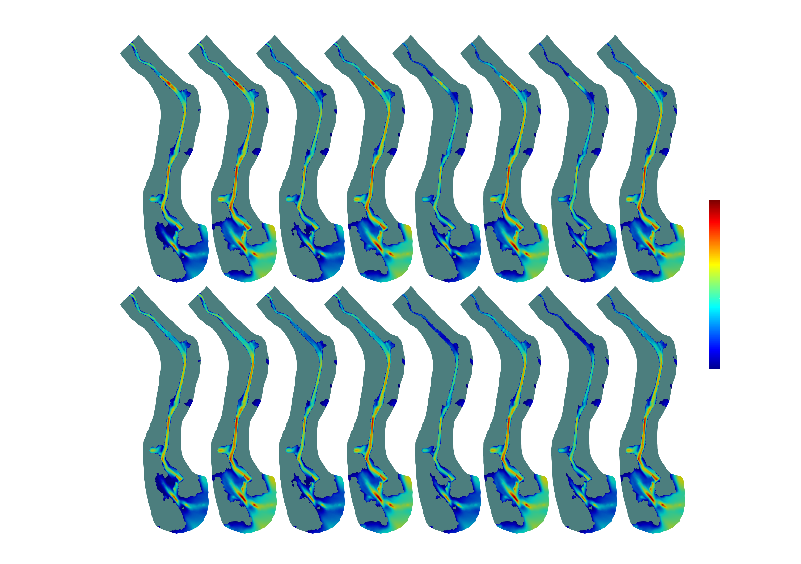

Jason Duguay, PhD.
Postdoctoral fellow Université de Sherbrooke
Sherbrooke, Québec
Phone: 819-588-0251
E-mail: duguay.jason@gmail.com

Background
Since 2012 I have been answering questions occurring at the cross-roads of hydraulic and environmental engineering. A large portion of this work has been devoted to improving fish passage through engineered hydraulic structures (i.e., roadway culverts and dams).
Both computational fluid dynamics (CFD) and experimental fluid methods have played important roles in my research. In particular, the open-sourced CFD model OpenFOAM, due to its strengths and immense flexibility, has proven a valuable tool in these projects. On the experimental front, stereoscopic particle image velocimetry, which provides three component vectors over a 2-D plane, has allowed me to ‘visualize’ flow fields to levels of spatial and temporal detail that would otherwise have been impossible using other experimental flow measurement techniques.
Aside from my work in fish passage, I also have an interest in all things related to fluid mechanics, hydrotechnical work and fluvial systems. Recently, I compared a two-phase Euler-Euler computational fluid dynamics model to a comprehensive laboratory data set with the goal of assessing the model’s ability to model bubble driven recirculatory flow in a municipal waste-water treatment plant. I was also involved in validation work of the Vectrino Profiler performed at the Université de Sherbrooke. Soon, I will be embarking on a project using OpenFOAM to model suspended sediment transport loads through a municipal sediment trap near the mouth of river located in Southern Québec. Have a look at my Research projects page for in-depth looks at some of my work.
My plan is to continue pursuing projects, either in academia or in industry, with a strong emphasis on hydrotechnics, ecological hydraulics and applied research. If you have a project idea or opportunity which you believe may benefit from my experience, don’t hesitate to get in contact, I would be happy to discuss.
Technical skills
- OpenFOAM (interFoam, twoPhaseEulerFoam, sedFoam, others)
- FLOW-3D (free-surface 3D hydrotechnical CFD model)
- Telemac2D (2D hydrodynamic model with sediment, tracer, thermal and pollutant transport capabilities)
- Python programming for object-orientated programming (e.g., pyFVM, pyTracker3D, blockMeshBuilder), scripting and analysis
- Experimental methods in fluid mechanics:
- stereoscopic particle image velocimetry (PIV)
- acoustic doppler velocimetry (ADV)
- optical void fraction probes for bubbly flows
- dyed UV flourescent mobile-bed particle tracking velocimetry
- 3D trajectory reconstruction using dual high-speed cameras
- Statistical methods
- Computer vision application programming
Publications
Published:
- Duguay, J.M. and Foster, B. and Lacey, R.W.J. and Castro-Santos, T. (2018). Sediment infilling benefits rainbow trout passage in a baffled channel. Ecological Engineering, 125, 38-49.
- Duguay, J.M. and Lacey, R.W.J. and Castro-Santos, T. (2018). Influence of baffles on upstream passage of brook trout and brown trout in an experimental box culvert. Canadian Journal of Fisheries and Aquatic Sciences, 76, 28-41.
- Duguay, J.M. and Lacey, R.W.J. and Gaucher, J. (2017). A case study of a pool and weir fishway modeled with OpenFOAM and FLOW-3D. Ecological Engineering, 103, 31-42.
- Duguay, J.M. and Lacey, R.W.J. (2015). Effect of Fish Baffles on the Hydraulic Roughness of Slip-Lined Culverts. Journal of Hydraulic Engineering (ASCE), 141(1), 04014065.
- Duguay, J.M., Jay Lacey, R.W. (2015). Numerical study of an innovative fish ladder design for perched culverts. Canadian Journal of Civil Engineering, 43 (2), 173-181.
In review:
- Duguay, J.M. and Lacey, R.W.J. (2019). Experimental validation of a two-phase Euler-Euler approach for predicting bubble induced recirculation in a rectangular tank. Journal of Water Research.
In preparation:
- Duguay, J.M. and Lacey, R.W.J. (2019). Experimental evaluation of Euler-Euler approach for modeling bed-load transport.